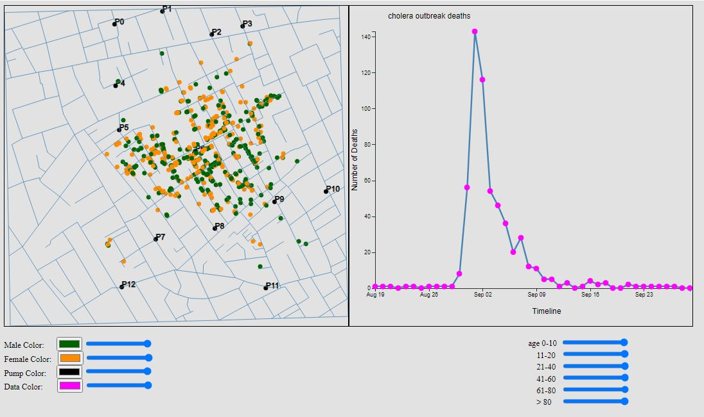
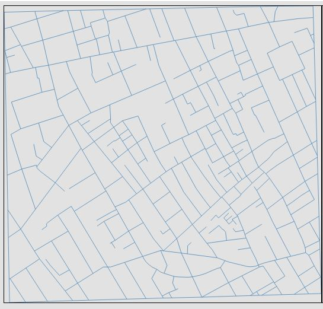
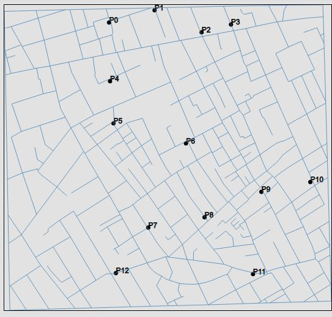
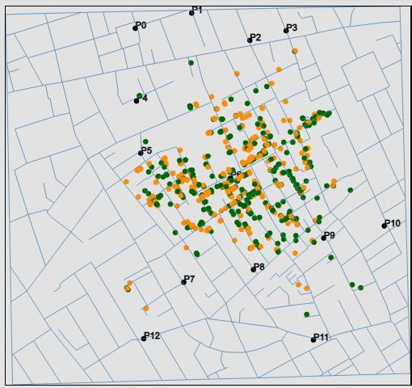
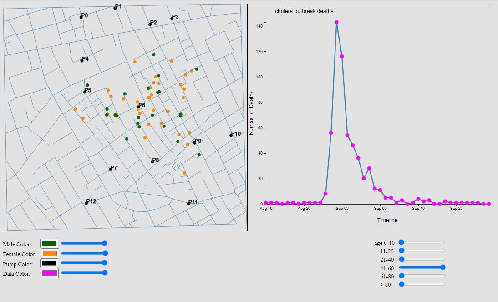
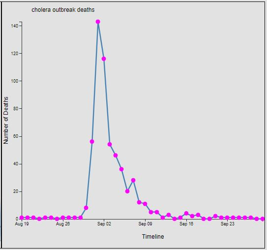
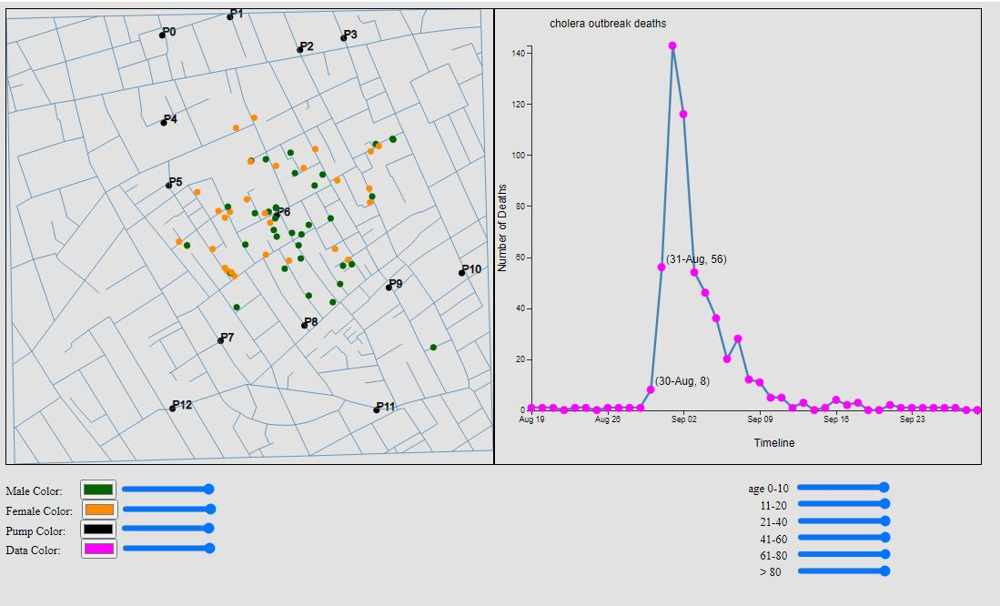

Documentation
Design Process:
The following design iterations were made as more data was analyzed.
Design 1

My first sketch invovled the idea of using both an interactive line graph and a bar graph. However, I ran across coding issues and time constraints that led me to drop the use of a bar graph. My intial idea of using sliders remained in future sketches.
Design 2:

For my next sketch I thought of using a pie chart concept instead of the bar chart. My belief was that it would be simpler than the bar chart and more time manageable. The pie chart was dropped as I felt it was a redundant visualization of Males and Females used in the map and line chart.
Design 3:

This was my last sketch and the most similar to my final design. I had it stripped down to the essential visulaizations necessary to display the data. I would have been able to add more if time permitted and less coding errors. The documentation tab was shrunken down as I thought that the original button was too large and clunky.
Final Design
The final design has been divided into three sections:

-
Map

- The map shows the initial drawing of the line segments to create the streets display.

- The map shows the location of pumps marked by this color.

- The map shows the location of all deaths marked the associated sex of the victim. Colors representing sex are darkgreen for the Male and darkorange for the Female ; these colors were selected based on contrast and from a color-blind friendly palette.
- The markers representing the location of deaths are interactive using the various sliders.
- The different age ranges are 1 to 10, 11 to 20, 21-40, 41-60, and 60-80.
-
The different age ranges can be hidden or shown using their associated slider control.

-
Line Chart

- The line chart shows the deaths over time. Hovering over a specific point shows the date and number of deaths on that day. Clicking on the points changes the dots shown on the map to represent those of that particular point. Additionally, the color of the dots can be changed to the users needs.

- By clicking on the various death dates, the associated death points on the map are displayed.
-
Documentation
- This section contains a link to the documentation page.
Insights
My first insight was that the majority of deaths were both the very young and very old. This can be seen when sliding the age filters on the map visualization. My assumptions is that these groups died due to immune systems that have not matured and weakened immune systems due to advanced age.
I also noticed the extreme spike starting at the very end of August and spiking on September 2nd. The line chart visualization demonstrates the days when the water was highly contaminated and at its most lethal.
I also noted how the majority of overall deaths were extremely clustered and that there were only a few outlier deaths on the outskirts of town. This makes me wonder if the population density could have increased the risk of both infections and deaths. As the maps shows, there could be a case made about city layouts that prevent clusters of citizens in one area and the importance of spreading people out to slow down community spread.